Para quem nunca jogou2 a 4 jogadores30 min10+Edição Galápagos (Asmodee)
· Redação Elite Boardgamers
Resumo em 1 minuto
Você junta fichas de pedras preciosas, compra cartas que dão desconto permanente e atraem nobres, e vence quem tiver mais pontos de prestígio quando alguém chegar a 15.
No seu turno, você faz uma só ação: pegar 3 fichas diferentes, pegar 2 iguais (com 4 ou mais na pilha), reservar uma carta e ganhar ouro, ou comprar uma carta.
Cada carta comprada é um bônus: vale como uma ficha da cor dela em todas as compras seguintes.
Os nobres visitam sozinhos quem tem os bônus pedidos e valem 3 pontos; com 15 pontos, a rodada é completada e vence quem tiver mais.
Como você aprende: 3 etapas, da mesa montada à contagem de pontosLeitura do essencial: cerca de 7 min
À vista, só o essencial para jogar. O que abre com + é explicação, exemplo, exercício ou regra de caso especial: abra quando precisar.
Montar a mesa passo a passo
A montagem segue a página de preparação do manual de 2015 p. 2, na mesma ordem, com o que o folheto de 2025 acrescenta. É igual para 2, 3 ou 4 jogadores, salvo nos passos 4 e 5.
Cartas de desenvolvimento de nível 1 / nível 2 / nível 3
40 / 30 / 20, 90 no total
Cartões de nobres
10
Marcador de primeiro jogador
1, só na caixa de 2025
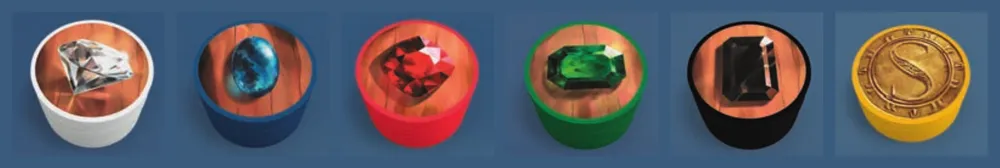
Os seis tipos de ficha, da esquerda para a direita: diamante (branca), safira (azul), rubi (vermelha), esmeralda (verde), ônix (preta) e ouro (amarela). Ilustração: manual Galápagos de 2025
Separe as cartas de desenvolvimento em três baralhos pelo verso. O verso mostra o nível com uma, duas ou três marcas redondas: nível 1, nível 2 e nível 3. Embaralhe cada baralho separadamente p. 2.
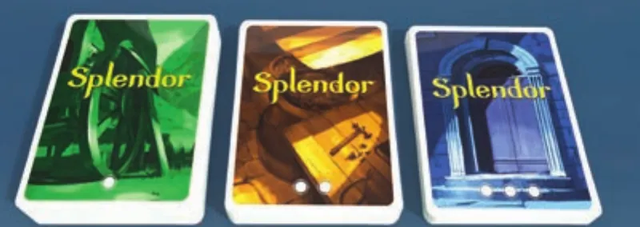
Os versos dos três níveis, da esquerda para a direita: nível 1 (verde, uma marca), nível 2 (amarelo, duas) e nível 3 (azul, três). Ilustração: manual Galápagos de 2025
Ponha os três baralhos virados para baixo numa coluna no centro da mesa, em ordem crescente de baixo para cima: nível 1 embaixo, nível 2 no meio, nível 3 em cima (p. 2; manual de 2025, passo 1).
Revele 4 cartas de cada nível, tiradas do baralho já embaralhado daquele nível, viradas para cima, numa fileira à direita dele. São 12 cartas à mostra (p. 2; manual de 2025, passo 2).
Embaralhe os cartões de nobres e revele o número de jogadores mais um, virados para cima, numa fileira acima das cartas: 3 nobres com 2 jogadores, 4 com 3, 5 com 4. Os outros voltam para a caixa e não são usados nesta partida (p. 2; manual de 2025, passo 3).
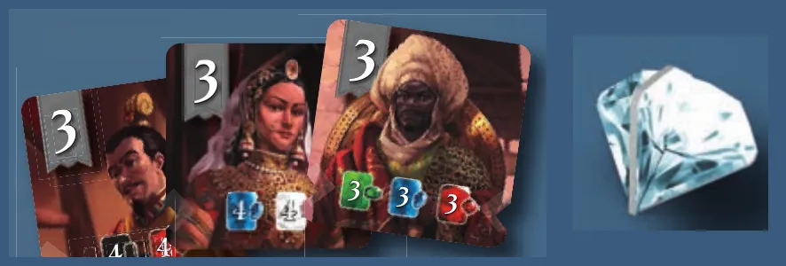
Um cartão de nobre: vale 3 pontos e mostra embaixo, à esquerda, o seu pedido (este pede 3 bônus verdes, 3 azuis e 3 vermelhos). À direita, o marcador de primeiro jogador da caixa de 2025. Ilustração: manual Galápagos de 2025
Separe as fichas por cor em seis pilhas, ao alcance de todos: é o estoque. Com 4 jogadores, use todas. Com 3, devolva à caixa 2 fichas de cada pedra preciosa; com 2, devolva 3 de cada. As fichas de ouro nunca mudam: são sempre 5 (p. 2; manual de 2025, passo 4).
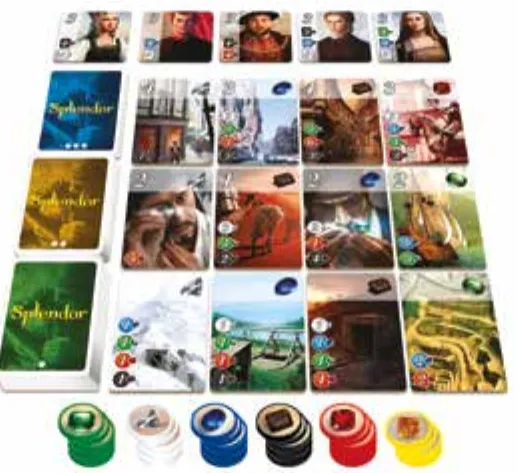
A mesa montada para 4 jogadores na caixa de 2015: 5 nobres no alto, os três baralhos à esquerda, nível 3 em cima, com 4 cartas reveladas ao lado de cada um, e as seis pilhas de fichas embaixo. Ilustração: manual Galápagos p. 2
Defina quem começa. O jogador mais novo começa, e a vez segue no sentido horário p. 3. Na caixa de 2025, ele pega o marcador de primeiro jogador (manual de 2025, passo 5).
Ninguém recebe fichas nem cartas na montagem: os passos do manual não dão fichas nem cartas aos jogadores. Tudo o que cada um vai ter sai do estoque e das cartas à mostra durante a partida p. 2 e 3.
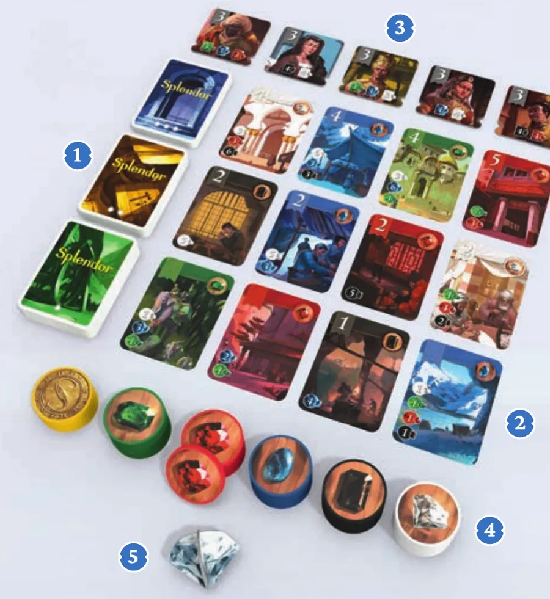
A mesma montagem na caixa de 2025, com os números dos passos do manual: 1, os baralhos; 2, as cartas reveladas; 3, os nobres; 4, as fichas; 5, o marcador de primeiro jogador. Ilustração: manual Galápagos de 2025
O que muda com o número de jogadoresp. 2:
Jogadores
Fichas de cada pedra no estoque
Fichas de pedra que voltam à caixa
Ouro
Nobres revelados
Nobres que voltam à caixa
2
4
15 (3 de cada)
5
3
7
3
5
10 (2 de cada)
5
4
6
4
7
nenhuma
5
5
5
"Não há outras modificações", diz o manual p. 2. Voltam para a caixa só as fichas de pedra da tabela e os nobres não revelados; nenhuma carta de desenvolvimento volta para a caixa.
Antes de começar, confira: baralhos em coluna com o nível 3 em cima; 4 cartas abertas em cada nível; nobres em número igual aos jogadores mais um; fichas de pedra conforme a tabela e as 5 de ouro; ninguém com fichas; quem começa definido.
Partida de 2 jogadores. Qual mesa está certa?
Com 2 jogadores, 3 fichas de cada pedra voltam à caixa (ficam 4), o ouro fica com 5 e revelam-se 3 nobres, o número de jogadores mais um p. 2.
Comece a jogar em 4 minutos
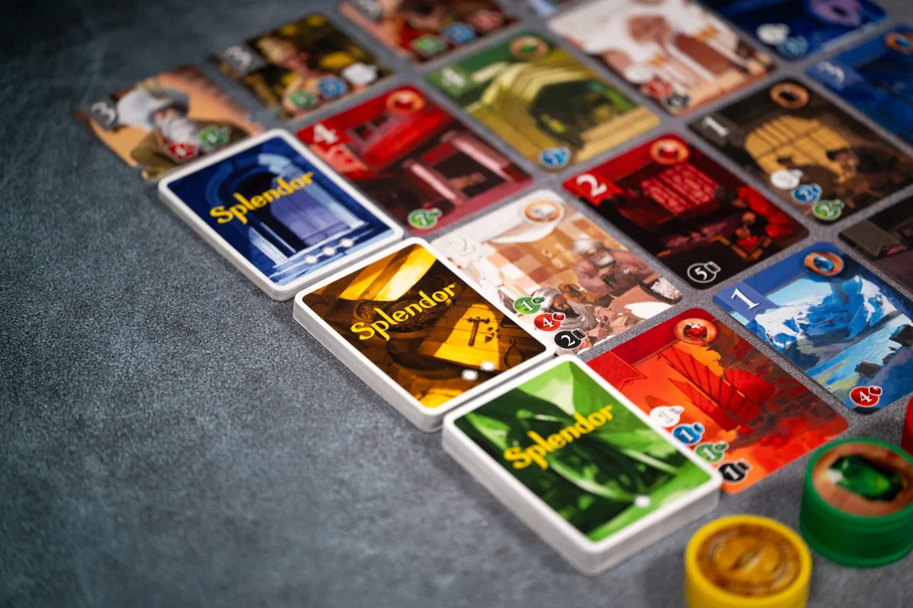
Imagem: Space Cowboys
Meta: em 4 minutos de leitura, montar a mesa e jogar o seu primeiro turno sem abrir o manual.
A ideia do jogo
Você é um comerciante de joias. Na sua vez, pega fichas de pedras preciosas ou usa as que juntou para comprar cartas de desenvolvimento. Cada carta comprada dá um bônus permanente, um desconto nas compras seguintes, e algumas valem pontos de prestígio; com bônus suficientes, os nobres visitam você no fim do seu turno e dão mais pontos. Quem chega a 15 pontos encerra a partida.
Monte a mesa
A montagem completa, com figuras, está na seção "Montar a mesa passo a passo", logo acima. O essencial p. 2 e 3:
Três baralhos em coluna, nível 1 embaixo, com 4 cartas abertas de cada nível.
Nobres: o número de jogadores mais um (o guia explica os nobres na etapa 3).
Fichas de cada pedra: 7 com 4 jogadores, 5 com 3, 4 com 2; ouro sempre 5.
O mais novo começa; a vez segue no sentido horário.
Seu primeiro turno
No seu turno, você faz exatamente uma destas quatro ações p. 3:
Ação
O que você faz
3 fichas diferentes
Pega 1 ficha de 3 pedras de cores diferentes
2 fichas iguais
Pega 2 fichas da mesma pedra, só se a pilha tiver pelo menos 4 antes de você pegar
Reservar
Pega 1 carta à mostra (ou a do topo de um baralho) para a sua mão e ganha 1 ficha de ouro (máx. 3 reservas; ouro se houver)
Comprar
Paga o custo de uma carta à mostra ou reservada e a põe à sua frente
Escolha uma ação. Como toda carta tem custo e você começa sem fichas e sem bônus, no primeiro turno a escolha é entre pegar fichas e reservar p. 3.
Ouro só vem da reserva. As duas ações de pegar fichas nunca dão ouro p. 3.
Carta que sai da mesa é reposta na hora, logo que é comprada ou reservada, pela do topo do mesmo baralho: ficam sempre 4 de cada nível à mostra p. 4.
Ainda não precisa saber
Como comprar, como o bônus dá desconto, como usar o ouro e o limite de 10 fichas: etapa 2. Como os nobres visitam: etapa 3. Abra a etapa quando chegar a hora.
Como a partida acaba
Uma rodada é cada jogador jogar um turno. Quando alguém chega a 15 pontos de prestígio no fim do turno, a rodada é completada para que todos tenham jogado o mesmo número de turnos. Vence quem tiver mais pontos, somando cartas e nobres; no empate, quem comprou menos cartas de desenvolvimento p. 4.
Prefere ver? Uma partida resumida em vídeo. Ele complementa este guia; em caso de diferença, vale o manual.
SPLENDOR - Gameplay resumida, canal Duque Board Games · abrir no YouTube
0Antes de tudo: o que é este jogoOpcional
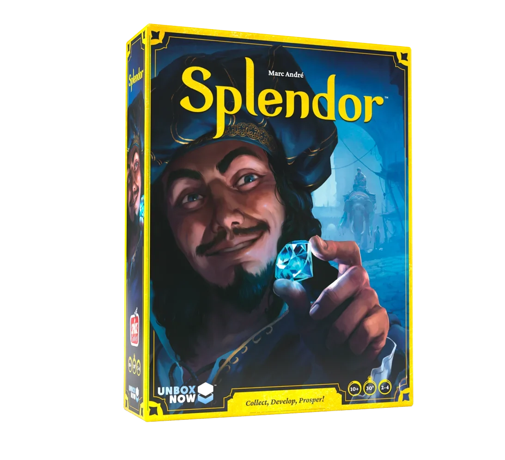
Imagem: Space CowboysAbrir esta seção
Você é um comerciante de pedras preciosas. Começa sem nada e junta fichas de cinco pedras: diamante (branca), safira (azul), esmeralda (verde), rubi (vermelha) e ônix (preta). Com elas, compra cartas de desenvolvimento, que no tema são minas, meios de transporte e artesãos. Vence quem tiver mais pontos de prestígio no fim p. 2 e 3.
O que faz o jogo andar é o desconto: cada carta comprada tem um bônus, uma pedra no canto, que vale como uma ficha daquela cor em todas as compras seguintes. As primeiras cartas custam fichas juntadas em vários turnos; mais adiante, os bônus pagam parte do preço, e uma carta pode sair de graça p. 4.
Duas ideias sustentam o resto:
Fichas vêm e vão; cartas ficam. As fichas gastas voltam ao estoque; as cartas compradas ficam com você e dão os bônus e boa parte dos pontos p. 3 e 4.
Quase tudo está à vista. As 12 cartas à venda e as fichas e cartas compradas de cada jogador ficam abertas: dá para ver o que o adversário vai comprar e reservar a carta antes dele p. 3 e 4.
1Como este guia ensinaOpcional
Imagem: Space CowboysAbrir esta seção
Três etapas, cada uma uma parte real da partida: montar a mesa, fazer as quatro ações, fechar com nobres e pontos. Cada etapa traz Para entender (o porquê), Passo a passo (a regra exata), casos especiais a um toque e tarefas com ajuda que diminui: exemplo resolvido, complete e sua vez. Toque numa opção para ver a resposta e a explicação. No fim, uma avaliação diz o que reler, e uma folha de consulta vai para a mesa.
2Etapa 1: montar a mesa e ler as cartas
Por que funciona assimSobre a edição
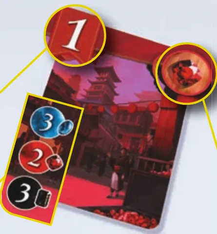
Uma carta de desenvolvimento da edição de 2025: vale 1 ponto de prestígio (canto de cima à esquerda), dá bônus vermelho (canto de cima à direita) e custa 3 fichas azuis, 2 vermelhas e 3 pretas (canto de baixo à esquerda). Ilustração: manual Galápagos de 2025
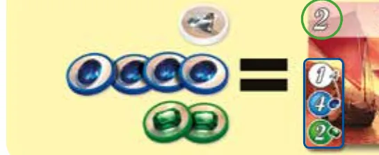
Outra carta, da caixa de 2015: vale 2 pontos, dá bônus vermelho (a pedra no canto de cima à direita) e custa 1 ficha branca, 4 azuis e 2 verdes. Ilustração: manual Galápagos p. 3Ver um exemplo resolvidoPratique esta etapa: exercícios com respostas
3Etapa 2: as quatro ações
Por que funciona assimRegra adicional: Menos de 3 cores no estoqueRegra adicional: Ouro esgotadoRegra adicional: Três reservas na mãoRegra adicional: Baralho vazioRegra adicional: Bônus maior que o custoRegra adicional: Ouro no lugar de uma cor que você tem
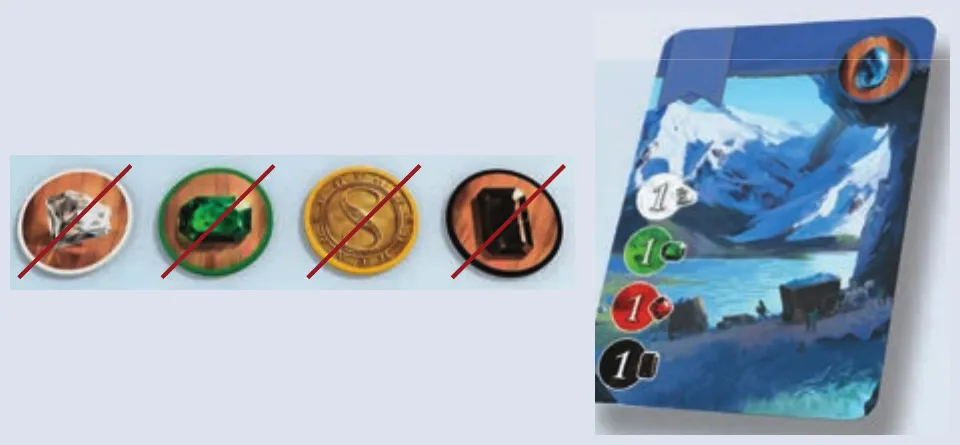
Giulia compra a carta azul (1 branca, 1 verde, 1 vermelha e 1 preta). Sem ficha vermelha, paga com 1 branca, 1 verde, 1 de ouro e 1 preta, que voltam ao estoque. Ilustração: manual Galápagos de 2025
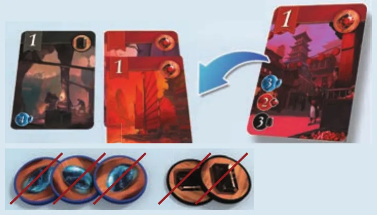
Giulia tem 2 cartas vermelhas e 1 preta. A carta da direita custa 3 azuis, 2 vermelhas e 3 pretas; os bônus descontam 2 vermelhas e 1 preta, e ela paga 3 fichas azuis e 2 pretas. Ilustração: manual Galápagos de 2025Ver um exemplo resolvidoPratique esta etapa: exercícios com respostas
4Etapa 3: nobres, fim da partida e pontos
Por que funciona assim
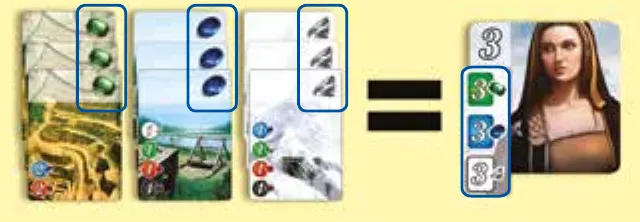
O nobre do exemplo do manual pede 3 bônus verdes, 3 azuis e 3 brancos: com essas cartas à sua frente, o jogador recebe a visita e ganha 3 pontos. Ilustração: manual Galápagos p. 3Regra adicional: Empate que continuaRegra adicional: Cartas reservadas no fimVer um exemplo resolvidoPratique esta etapa: exercícios com respostas
5Situações especiaisOpcional
Imagem: Space CowboysAbrir esta seçãoDicaSobre a ediçãoSobre a ediçãoDica
6Avaliação finalOpcional
Imagem: Space CowboysAbrir esta seção
Responda sem consultar. Cada resposta diz o que reler.
1. Partida de 3 jogadores. Quantas fichas de cada pedra preciosa e quantos nobres vão para a mesa?
5 de cada pedra e 4 nobres; o ouro fica com 5 p. 2. Releia a etapa 1.
2. A pilha preta tem 3 fichas. Você pode pegar 2 pretas?
Não. Duas iguais só com pelo menos 4 na pilha antes de pegar p. 3. Releia a etapa 2.
3. Carta de 3 azuis, 2 vermelhas e 3 pretas; você tem 2 bônus vermelhos e 1 preto. Quantas fichas paga?
5: 3 azuis e 2 pretas (manual de 2025; p. 4). Releia a etapa 2.
4. No turno passado, você cumpriu o pedido de dois nobres e escolheu um. Neste turno, só pegou fichas, e o outro nobre continua na mesa. O que acontece no fim do turno?
Ele visita você. A verificação é no fim de cada turno seu, compre ou não, e a visita não é uma ação p. 3 e 4. Releia a etapa 3.
5. Bruno chega a 15 pontos. Davi joga depois e chega a 16. Quem vence?
Davi. A rodada é completada, e vence quem tem mais pontos no fim p. 4. Releia a etapa 3.
7Para consultar durante a partida
Imagem: Space Cowboys
Preparação: 3 baralhos (nível 1 embaixo, nível 3 em cima), 4 cartas reveladas de cada nível. Nobres: jogadores mais um. Fichas de cada pedra: 7 (4 jogadores), 5 (3), 4 (2). Ouro: sempre 5. Começa o mais novo; sentido horário.
No seu turno, uma ação:
3 fichas de cores diferentes (sem ouro; se faltar cor, 2 ou 1).
2 fichas da mesma cor, se a pilha tiver 4 ou mais antes (sem ouro).
Reservar 1 carta (à mostra ou topo de baralho, escondida) e pegar 1 ouro, se houver. Máximo 3 na mão; não se descarta.
Comprar 1 carta à mostra ou reservada: custo menos bônus; o resto em fichas; ouro substitui qualquer cor; fichas gastas voltam ao estoque.
Na hora: carta à mostra comprada ou reservada é reposta pelo mesmo nível (baralho vazio, espaço vazio). Fim do turno: mais de 10 fichas: devolva até 10, à sua escolha. Nobre: se os bônus cumprem o pedido, ele vem (3 pontos), um por turno, sem ação, sem recusa.
Fim: alguém com 15 ou mais no fim do turno: completa a rodada (último a jogar é quem está à direita do primeiro). Pontos: cartas e nobres. Empate: menos cartas compradas vence; persistindo, vitória dividida.